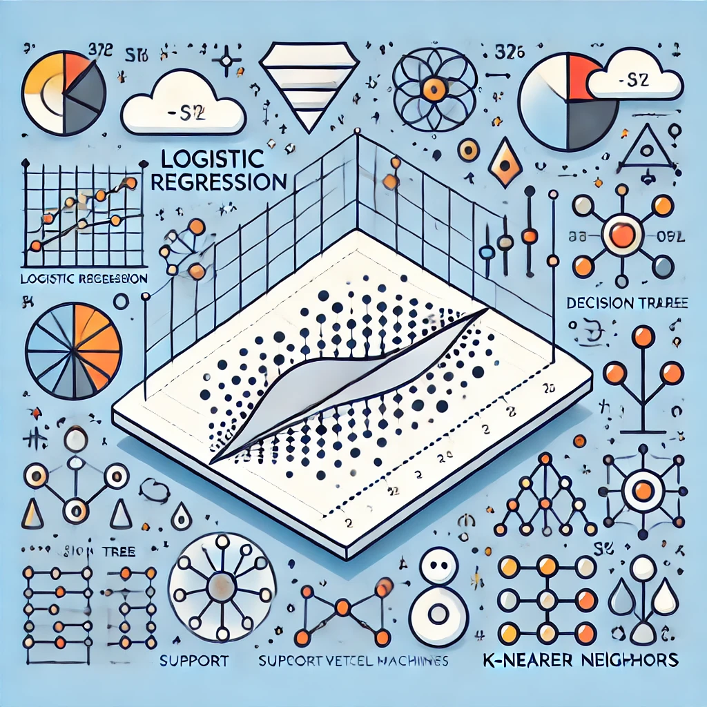
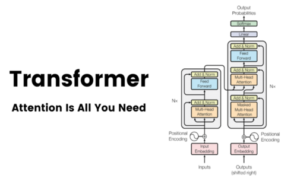
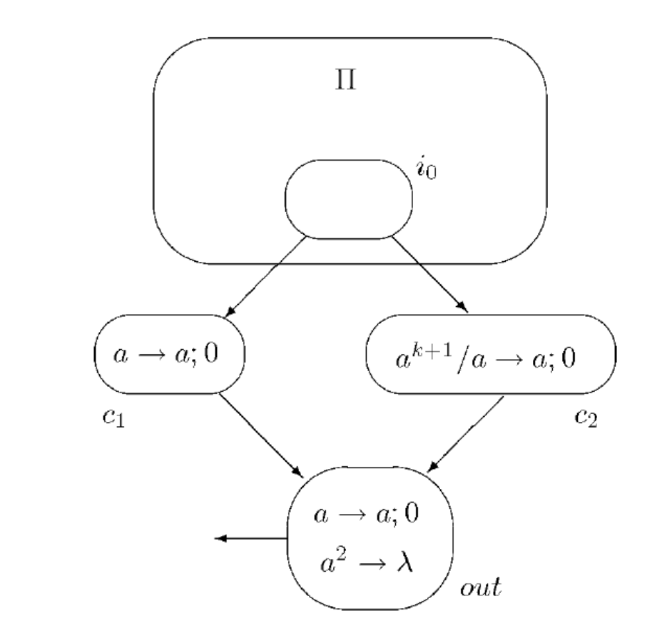

Machine Learning Classic algorithms

An implementation of some of the classic ML preprocessing utils and ML algorithms using only Python's Numpy library.
Implementing transformers from scratch

Implementation from scratch of the module introduced in the well-known paper "Attention is All You Need", the transformers.
Turing completeness of Spiking Neural P Systems

A review of the Spiking Neural P Systems (SNP) Turing completeness.